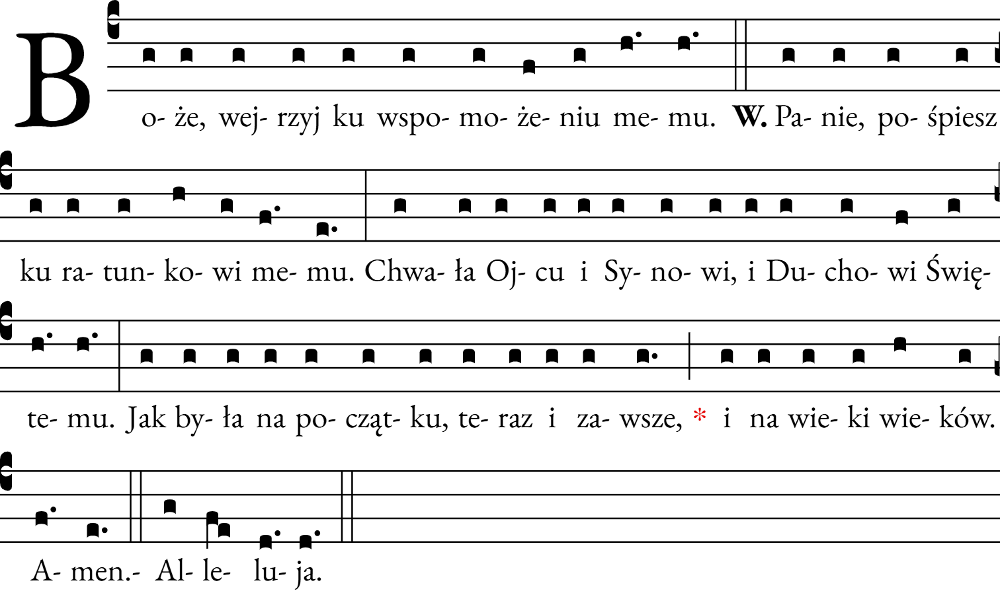
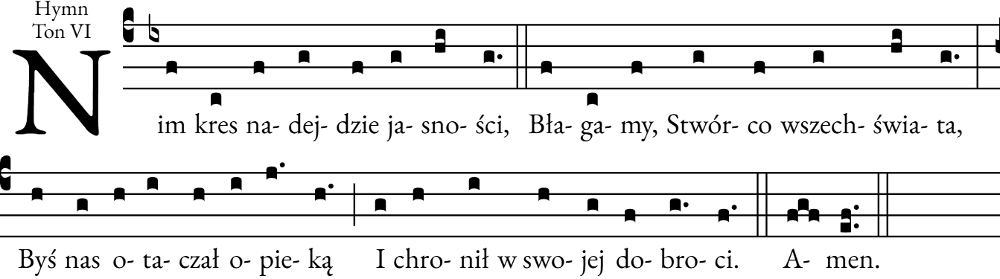
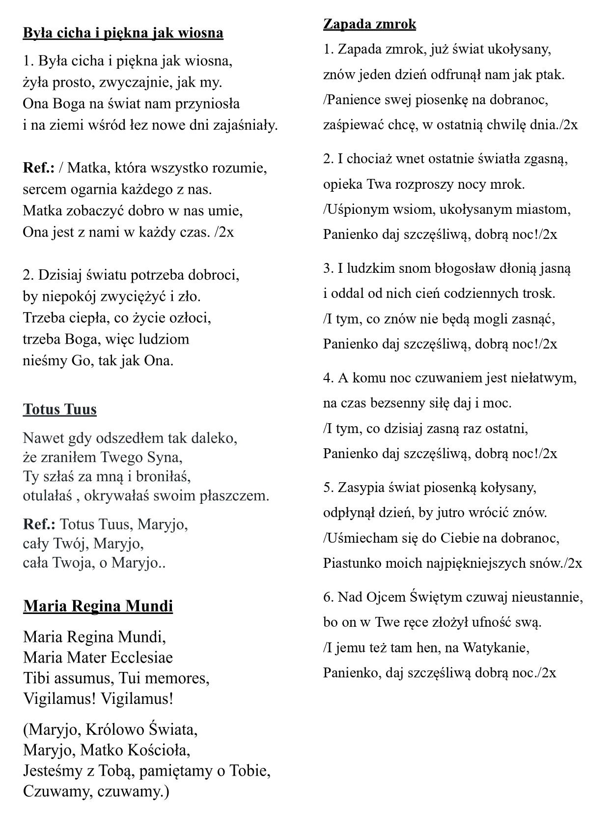

Wezwanie
K. † Boże, wejrzyj ku wspomożeniu memu.
W. Panie, pośpiesz ku ratunkowi memu.
Chwała Ojcu i Synowi, i Duchowi Świętemu.
Jak była na początku, teraz i zawsze,
i na wieki wieków. Amen. Alleluja.
W tym miejscu przewidziany jest rachunek sumienia.
Chwila ciszy…
Akt pokuty

K. Panie, który zostałeś posłany, aby uzdrowić skruszonych w sercu, zmiłuj się nad nami.
W. Zmiłuj się nad nami.
K. Chryste, który przyszedłeś wzywać grzeszników, zmiłuj się nad nami.
W. Zmiłuj się nad nami.
K. Panie, który siedzisz po prawicy Ojca, † aby się wstawiać za Twoim ludem, zmiłuj się nad nami.
W. Zmiłuj się nad nami.

Hymn
W ostatniej zwrotce niemal każdego hymnu, z reguły mamy zwrot do Trójcy Świętej, w związku z tym, podczas jej trwania robimy skłon, by jeszcze bardziej oddać Bogu chwałę.
1.Nim kres nadejdzie jasności,
Błagamy, Stwórco wszechświata,
Byś nas otaczał opieką
I chronił w swojej dobroci.
2. Niech serca nawet uśpione
Przez sen czuwają przy Tobie;
A kiedy zbudzi je zorza,
Niech Ciebie wielbią z weselem.
3. Niech ciało zdrowiem się cieszy
I duch gorliwość odnajdzie,
A Ty swym światłem przenikaj
Głębokie nocy ciemności.
4. O spraw to, Ojcze najlepszy,
Przez Syna Twego, Chrystusa,
Co z Tobą w Ducha jedności
Króluje w blasku na wieki. Amen.
Psalmodia
Antyfona 1.: Zmiłuj się nade mną, Panie * i wysłuchaj moją modlitwę.

Psalm 4
Dziękczynienie
Godnym podziwu uczynił Pan Tego, którego wskrzesił z martwych (św. Augustyn)
Kiedy Cię wzywam, odpowiedz mi, Boże, *
który wymierzasz mi sprawiedliwość.
Tyś mnie wydźwignął z utrapienia, *
zmiłuj się nade mną i wysłuchaj moją modlitwę.
Jak długo będą ociężałe wasze serca, mężowie? *
Czemu kochacie marność i szukacie kłamstwa?
Wiedzcie, że godnym podziwu czyni Pan swego wiernego, *
Pan mnie wysłucha, gdy będę Go wzywał.
Zadrżyjcie i już nie grzeszcie, *
rozważcie na swych łożach i zamilknijcie.
Złóżcie należne ofiary *
i miejcie nadzieję w Panu.
Wielu powiada: "Któż nam szczęście ukaże?" *
Wznieś ponad nami, Panie, światłość Twojego oblicza!
Więcej wlałeś radości w moje serce *
niż w czasie obfitych plonów pszenicy i wina.
Spokojnie zasypiam, kiedy się położę, †
bo tylko Ty jeden, Panie, *
pozwalasz mi żyć bezpiecznie.
Chwała Ojcu i Synowi, *
i Duchowi Świętemu.
Jak była na początku, teraz i zawsze, *
i na wieki wieków. Amen.
Po każdym psalmie i pieśni powtarzamy antyfonę.
Antyfona 1.: Zmiłuj się nade mną, Panie * i wysłuchaj moją modlitwę.
Antyfona 2.: Wśród nocy * błogosławcie Pana,

Psalm 134
Wieczorna modlitwa w świątyni
Chwalcie Boga naszego, wszyscy Jego słudzy, którzy się Go boicie, mali i wielcy! (Ap 19, 5)
Błogosławcie Pana, wszyscy słudzy Pańscy, *
którzy przebywacie nocą w Jego domu.
Wznieście wasze ręce ku Miejscu Świętemu *
i błogosławcie Pana.
Niech Cię Pan błogosławi ze Syjonu, *
Ten, który stworzył niebo i ziemię.
Chwała Ojcu i Synowi, *
i Duchowi Świętemu.
Jak była na początku, teraz i zawsze, *
i na wieki wieków. Amen.
Antyfona 2.: Wśród nocy * błogosławcie Pana,
Czytanie (Pwt 6, 4-7)
Słuchaj, Izraelu: Pan jest naszym Bogiem, Panem jedynym. Będziesz miłował Pana, Boga twojego, z całego swego serca, z całej duszy swojej, ze wszystkich sił swoich. Niech pozostaną w twym sercu te słowa, które ja ci dziś nakazuję. Wpoisz je twoim synom, będziesz o nich mówił przebywając w domu, w czasie podróży, kładąc się spać i wstając ze snu.
Responsorium krótkie

K. W ręce Twoje, Panie * Powierzam ducha mojego.
W. W ręce Twoje, Panie / Powierzam ducha mojego.
K. Ty nas odkupiłeś, Panie, Boże wierny.
W. Powierzam ducha mojego.
K. Chwała Ojcu i Synowi, i Duchowi Świętemu.
W. W ręce Twoje, Panie / Powierzam ducha mojego.
Pieśń Symeona (Łk 2, 29-32)
Kantyk Symeona śpiewamy na tony gregoriańskie, na ton prosty; na początku każdego dwuwersu dodajemy inicjum.
Antyfona: Strzeż nas, Panie, gdy czuwamy, * podczas snu nas osłaniaj / abyśmy czuwali z Chrystusem / i odpoczywali w pokoju.

Teraz, o Panie, pozwól odejść swemu słudze w pokoju, *
według słowa Twojego,
Bo moje oczy ujrzały Twoje zbawienie, *
któreś przygotował wobec wszystkich narodów:
Światło na oświecenie pogan *
i chwałę ludu Twego, Izraela.
Chwała Ojcu i Synowi, *
i Duchowi Świętemu.
Jak była na początku, teraz i zawsze, *
i na wieki wieków. Amen.

K. Noc spokojną i śmierć szczęśliwą niech nam da Bóg wszechmogący, Ojciec i Syn, i Duch Święty. W. Amen.
Antyfona maryjna

Inne pieśni
